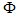
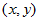
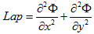
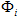
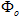
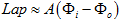
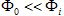

A Brief History of the EEG Surface Laplacian Background and History, by Prof. Paul L. Nunez Home | Download | Screenshots | Project detail
A Brief History of the EEG Surface Laplacian The surface Laplacian of voltage  recorded on a plane surface with coordinates  is defined by the expression  Apparently, the first EEG surface Laplacian algorithm was implemented by Hjorth (1975) to improve spatial resolution and eliminate the influence of reference electrode distortions. No firm theoretical justification was provided by Hjorth at that time, but his approach seemed, superficially, to serve as a plausible extension of current source density (CSD) then popular with physiologists doing depth recordings in animal cortex. CSD consists of estimating second derivatives of recorded field potentials in a single cortical depth coordinate to reveal local synaptic current sources more sharply. Some neuroscientists then used the labels "CSD" and "Laplacian" interchangeably, failing to acknowledge important differences. The early absence of a clear theoretical justification probably delayed wider adoption of Laplacians by the EEG community and later led to misunderstandings. However, Katznelson and Nunez (1981) showed that EEG surface Laplacians provide estimates of local current flux through the skull into the scalp; this theoretical connection follows mainly from the high relative resistivity of skull tissue, which tends to focus current normal to local skull surface. This interpretation implies that Laplacians should be especially sensitive to dipole sources oriented normal to local skull, assuming approximately constant tissue resistivities over the surface. Still, the number of available EEG channels was limited to less than about 20 at that time; accuracy of Laplacian estimates was similarly limited. Initial enthusiasm for the Laplacian was muted by this critical technological barrier. In the early 1990s, several EEG scientists criticized Laplacian methods for having only minimal theoretical justification (van Dijk and Spekreijse 1992). In response, Nunez and Westdorp (1994), Srinivasan et al (1996), Kramer and Szeri (2004), and Nunez and Srinivasan (2006) showed that for high resistivity skulls, the surface Laplacian is related to the inner skull  potential and outer skull  potential by the approximate relation  Here the constant A depends on local cortical, skull, and scalp thicknesses and resistivities. When cortical sources are localized as in the case of single dipoles or small dipole layers, potentials fall off rapidly between cortex (or dura surface) and scalp, that is,  and the surface Laplacian is approximately proportional to local cortical (or dura) potential. By contrast, when cortical sources form very large (perhaps > 10 cm diameter dipole layers), the inner and outer skull potentials have similar magnitudes so that scalp Laplacians are small. This interpretation then emphasizes that unprocessed scalp potentials and scalp Laplacians are complementary measures of cortical source behavior, sensitive to different scales of activity. EEG interpretations (source localization, functional connectivity, and so forth) can be substantially facilitated by employing both measures to the same data sets (Nunez and Srinivasan 2006). Still another set of studies compared cortical potential distributions predicted by the New Orleans surface Laplacian with inner projections based on a three-sphere model labeled Melbourne dura imaging (Nunez et al. 2001; Nunez and Srinivasan 2006). Typical correlations between these two independent estimates of cortical potential based on both genuine 131-channel EEG and simulations with distributed sources in a three-sphere head model were in the 0.95 range, thereby adding additional support for the Laplacian. Hjorth's original work employed a very simple nearest-neighbor algorithm to estimate Laplacians. Such estimates were, for all algorithms, severely limited by sparse sampling density. Later, after EEG systems with many more channels became easily available, a French group developed substantially improved Laplacian algorithms based on fitting surface potential maps to either planar or spherical spline functions (Perrin et al., 1987, 1989). These functions were then differentiated analytically to estimate scalp surface Laplacians. This spline Laplacian approach was later extended to include ellipsoidal (Law et al. 1993) and more realistic scalp surfaces (Babiloni et al. 1996). More recently, several additional algorithms have been developed to estimate Laplacians more accurately on realistic human heads imaged with MRI (recent work by Irvine group, 2011). One important Laplacian application is to provide more accurate estimates of EEG coherence patterns, which provide important measures of functional segregation and integration between cortical regions; such measures vary substantially across cognitive tasks. Before the 1990s some EEG scientists and animal physiologists suspected that the observed high scalp coherence over large distances (> 5 to 20 cm) did not reflect cortical source coherence, but resulted only from volume conduction. This view was based partly on the fast fall off of coherence (typically over less than 1 cm) recorded from animal cortex with mm scale electrodes. But, this volume conduction interpretation ignores the fact that high human scalp coherence is mostly confined to narrow frequency bands (typically the lower range of alpha frequencies), and volume conduction is essentially independent of frequency. This misunderstanding involved failure to appreciate that the dynamic variables that characterize complex systems are generally expected to be scale-sensitive (Nunez 1995, 2010; Nunez et al. 1997, 2001; Nunez and Srinivasan 2010; Sporns 2010). Thus, cortical coherence patterns estimated with mm scale (mesoscopic) cortical electrodes are not generally expected to mirror (macroscopic) scalp coherence between the same cortical regions. The issue of genuine large long-range scalp coherence seemed to be finally settled when alpha band Laplacian-based coherence estimates were often found to be large at 10 to 20 cm separations and showed large changes with cognitive tasks (Nunez 1995; Nunez et al. 2001). But, some scientists advanced still another objection, claiming that coherence estimates obtained from spline Laplacian algorithms produce erroneously high coherence estimates due to the global nature of spline fits (Biggins et al. 1991, 1992). This result was, however, shown to be based on faulty simulation methods; that is, bypassing head model simulations and simply submitting random numbers to the spline algorithm (Perrin et al. 1992; Nunez et al. 1994, 1997). It has been shown that the spline-Laplacian coherence estimates are typically conservative; that is, they tend to underestimate cortical source coherence by filtering out the very low spatial frequencies (Srinivasan et al. 1998; Nunez and Srinivasan 2006). Note also that large alpha band coherence at 10 to 20 cm scalp separations is easily obtained with (close) bipolar recordings and may be manipulated with cognitive tasks or eyes opening (Nunez 1995).
References Biggins CA, Fein G, Ratz J and Amir A. Artifactually high coherence results from using spherical spline computation of scalp current density. Electroencephalography and Clinical Neurophysiology 79: 413–419, 1991. Biggins CA, Ezekiel F and Fein G. Spline computation of scalp current density and coherence: a reply to Perrin. Electroencephalography and Clinical Neurophysiology 83: 172–174, 1992. Hjorth, B. An on line transformation of EEG scalp potentials into orthogonal source derivations. Electroencephalography and Clinical Neurophysiology 39: 526-530, 1975. Kramer MA and Szeri AJ. Quantitative approximations of cortical surface potential from EEG and ECoG measurements. IEEE Transactions on Biomedical Engineering 51: 1358-1356, 2004. Law SK,Nunez PL and Wijesinghe RS. High resolution EEG using spline generated surface Laplacians on spherical and ellipsoidal surfaces. IEEE Transactions on Biomedical Engineering 40: 145-152, 1993. Nunez PL. Electric Fields of the Brain: The Neurophysics of EEG (1st Ed), Oxford University Press, New York, 1981. Nunez PL. Neocortical Dynamics and Human EEG Rhythms, New York: Oxford University Press, 1995. Nunez PL. Brain, Mind, and the Structure of Reality, New York: Oxford University Press, 2010. Nunez PL and Srinivasan R. Electric Fields of the Brain: The Neurophysics of EEG (2nd Ed), New York: Oxford University Press, 2006. Nunez PL and Srinivasan R. Scale and frequency chauvinism in brain dynamics: too much emphasis on gamma band oscillations. Brain Structure and Function 215: 67-71, Nunez PL, Silberstein RB, Cadiush PJ, Wijesinghe RS, Westdorp AF and Srinivasan R. A theoretical and experimental study of high resolution EEG based on surface Laplacians and cortical imaging. Electroencephalography and Clinical Neurophysiology 90: 40–57, 1994. Nunez PL, Srinivasan R, Westdorp AF, Wijesinghe RS, Tucker DM, Silberstein RB, and Cadusch PJ. EEG coherency I: Statistics, reference electrode, volume conduction, Laplacians, cortical imaging, and interpretation at multiple scales. Electroencephalography and Clinical Neurophysiology: 103: 516-527, 1997. Nunez PL, Silberstein RB, Carpentar MR, Srinivasan R, Wijesinghe RS, Tucker DM, Cadusch PJ and Wu X. EEG coherency II: Comparisons of multiple measures of EEG coherency differences between resting and cognitive states, Electroencephalography and Clinical Neurophysiology: 110: 469-486, 1999. Nunez PL, Wingeier BM and Silberstein RB. Spatial-temporal structures of human alpha rhythms: theory, micro-current sources, multiscale measurements, and global binding of local networks, Human Brain Mapping 13: 125-164, 2001. Perrin F. Comments on article by Biggens et al. Electroencephalography and Clinical Neurophysiology 83: 171–172, 1992. Perrin, F, Bertrand O and Pernier J. Scalp current density mapping: value and estimation from potential data. IEEE Transactions on Biomedical Engineering 34: 283–287, 1987. Perrin F, Pernier J, Bertrand O and Echallier JF. Spherical spline for potential and current density mapping. Electroencephalography and Clinical Neurophysiology: 72: 184–187, 1989. Sporns O. Networks of the Brain, The MIT Press, 2010. Srinivasan R, Nunez PL, Tucker DM, Silberstein RB and Cadusch PJ. Spatial sampling and filtering of EEG with spline Laplacians to estimate cortical potentials. Brain Topography 8: 355-366, 1996. Srinivasan R, Nunez PL and Silberstein RB. Spatial filtering and neocortical dynamics: estimates of EEG coherence. IEEE Transactions on Biomedical Engineering 45: 814-826, 1998. van Dijk BW and Spekreijse H. The 2 dim-Laplacian field is not suitable to localize sources of EEG activity. Vision Research 32: 261-262, 1992. |
||